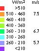

Wind
Map of Denmark
How
to Read the Wind Map of Denmark
 This
unique map of Danish wind speeds takes local terrain (speed
up effects) and roughness into account.
It shows a much more detailed picture of wind conditions than
we saw on the previous page. We can clearly see that West and
Southwest are the prevailing wind direction
in Denmark, since West and Southwest facing coastal sites have
by far the highest energy content of the wind (the red and yellow
areas).
This
unique map of Danish wind speeds takes local terrain (speed
up effects) and roughness into account.
It shows a much more detailed picture of wind conditions than
we saw on the previous page. We can clearly see that West and
Southwest are the prevailing wind direction
in Denmark, since West and Southwest facing coastal sites have
by far the highest energy content of the wind (the red and yellow
areas).
 The map is actually a very high resolution
map, where the area of the whole country (44,000 km2
area) was divided into 1.1 million squares 200 by 200 m each
(220 by 220 yards), and the mean wind speed was calculated for
each square. You may download the map in various resolutions
from the web site of Energy &
Environmental Data in Denmark, if you wish (it is also available
on CD-ROM).
The map is actually a very high resolution
map, where the area of the whole country (44,000 km2
area) was divided into 1.1 million squares 200 by 200 m each
(220 by 220 yards), and the mean wind speed was calculated for
each square. You may download the map in various resolutions
from the web site of Energy &
Environmental Data in Denmark, if you wish (it is also available
on CD-ROM).
Using
the Wind Map for Planning
This wind map was developed to assist the Danish municipalities
in their planning (zoning) work for wind turbines. Each municipality
in Denmark is responsible for allocating suitable areas for wind
turbines in order that the Government may fulfill its plans to
supply 50% of the country's electricity consumption by wind energy
in 2030.
Using
the Wind Map for Wind Prospecting
The map is obviously also a gift to wind project developers,
who can see the (probable) best wind fields in the country directly.
One could therefore hardly imagine it being financed and published
by any other institution than a government.
 The map, however, is not sufficient for actually
locating a wind turbine, since it was generated mechanically,
without detailed verification in the terrain. In order to make
proper calculation of annual electricity output one would have
to go to the prospective site and verify e.g. the roughness and
locate obstacles and check for new buildings,
trees etc.
The map, however, is not sufficient for actually
locating a wind turbine, since it was generated mechanically,
without detailed verification in the terrain. In order to make
proper calculation of annual electricity output one would have
to go to the prospective site and verify e.g. the roughness and
locate obstacles and check for new buildings,
trees etc.
State
of the Art Methods of Wind Assessment
This map was produced for the Danish
Energy Agency by Energy &
Environmental Data, a wind energy software and consultancy
firm in collaboration with the Wind Energy Department of Risoe National Laboratory, which
developed the basic fluid dynamics software used for the wind
calculations, the WAsP programme.
 Calculating such a detailed wind map of a
large area is actually an enormous task: The map was made on
the basis of extremely detailed digital maps at the scale of
1:25000. The maps in reality consist of 7 layers, with one layer
representing altitude contours (orography), another forests and
fences (and even individual large trees), a third layer buildings,
a fourth layer lakes and rivers etc. The programme that generates
roughness data for the WAsP programme determines terrain contours
and contiguous areas of forests, lakes, cities etc. in neighbouring
squares of each square out to a distance of 20,000 m in all wind
directions.
Calculating such a detailed wind map of a
large area is actually an enormous task: The map was made on
the basis of extremely detailed digital maps at the scale of
1:25000. The maps in reality consist of 7 layers, with one layer
representing altitude contours (orography), another forests and
fences (and even individual large trees), a third layer buildings,
a fourth layer lakes and rivers etc. The programme that generates
roughness data for the WAsP programme determines terrain contours
and contiguous areas of forests, lakes, cities etc. in neighbouring
squares of each square out to a distance of 20,000 m in all wind
directions.
 The results were subsequently recalibrated
using statistics from several hundred wind turbines scattered
throughout the country for which energy output data are available.
Thus it has been possible to compensate for the fact that the
mean wind speeds in Denmark tend to decrease, as we move towards
the East.
The results were subsequently recalibrated
using statistics from several hundred wind turbines scattered
throughout the country for which energy output data are available.
Thus it has been possible to compensate for the fact that the
mean wind speeds in Denmark tend to decrease, as we move towards
the East.
© Copyright 2000 Soren Krohn
Updated 6 August 2000
http://www.windpower.org/tour/wres/dkmap.htm